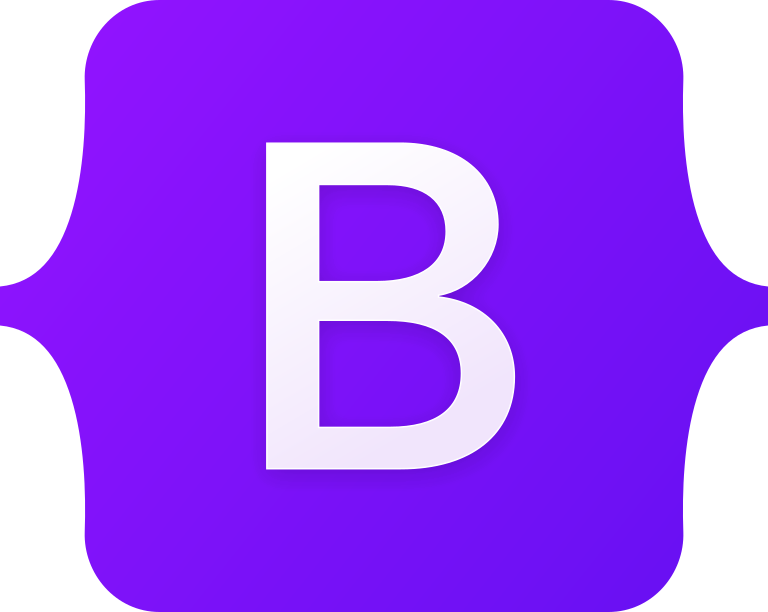

UI Frameworks are Amazing
User Interface (UI) frameworks like Bootstrap have gained widespread popularity due to their ability to simplify the process of building responsive, mobile-first websites. However, the use of UI frameworks also introduces a variety of complexities that can make it difficult for developers to use. Learning what each class does in bootstrap is like learning the syntax of a new programming language. Frameworks like React have large learning curves in setting up the development environment alone. New tools, configuration files, and endless settings are possible, and in order to effectively use the service, one needs to know the pros and cons of each one.
However, using frameworks such as Bootstrap can provide significant time and cost savings for website development. By providing a library of pre-built components and classes, Bootstrap promotes reusability. This means a developer doesn’t have to re type the color #D4EDDA (Bootstrap’s green success color) every time they want to use it. Or ensure a div element that holds a picture will take the full width of the screen, and then responsively resize and rearrange its contents as the window shrinks. As it turns out, most website setups and features are generic, and a library like Bootstrap can make these repetitive processes more streamlined.
Coding a website entirely in raw HTML and CSS without a UI framework can be a cumbersome and time-consuming process, particularly for larger and more complex websites. Writing out every component of the website from scratch can take forever and is very error prone for developers. In business, time is money and faster developers are more efficient and can get more done in any given time period. It can even be argued that large and more complex projects aren’t even possible without the modularization a UI framework provides. The development cycle will get deadlocked in the debug phase if code quality gets too out of hand. As John Woods once said “Always code as if the guy who ends up maintaining your code will be a violent psychopath who knows where you live.” UI frameworks drastically help keep things modular and clean.
Let me conclude this high-level overview of the benefits and challenges of using UI frameworks with my vow of promising to never start a web project without selecting an appropriate UI framework. After using Bootstrap for a little while I don’t want to return to raw HTML/CSS/JS again. I would rather learn the classes and only have to add a few lines of code to a project to drastically change the way things look (which is also great for prototyping and designing).